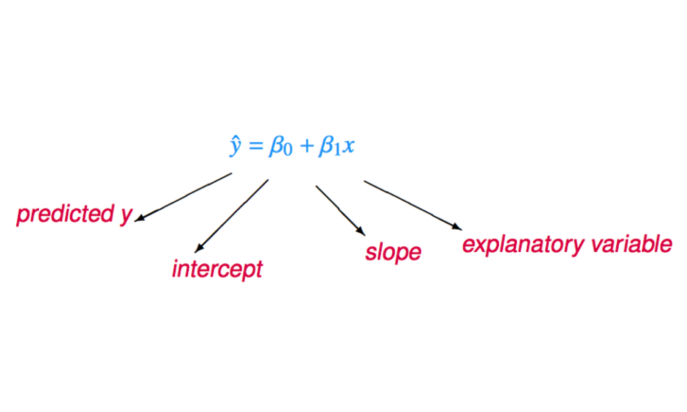
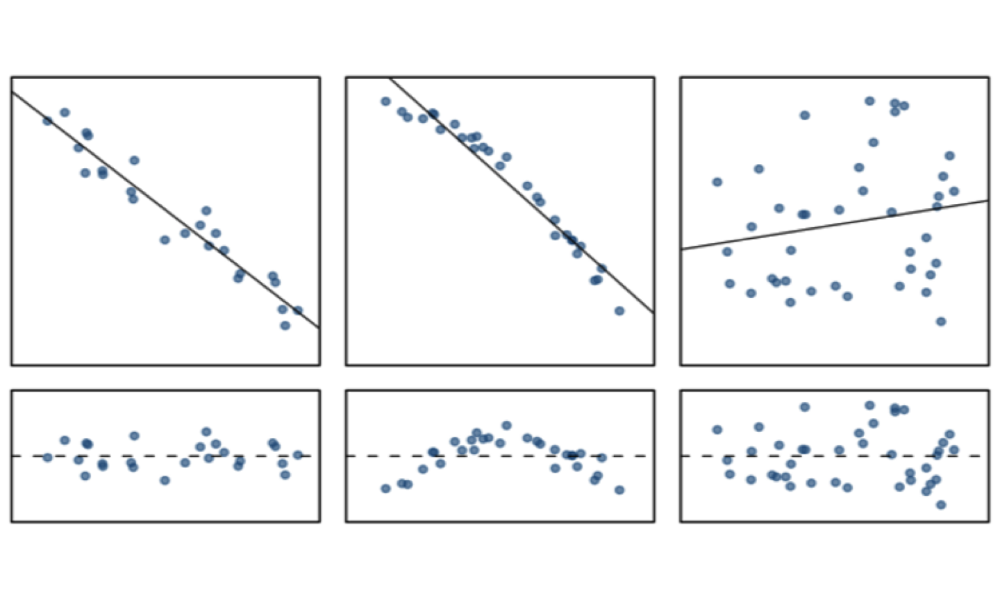
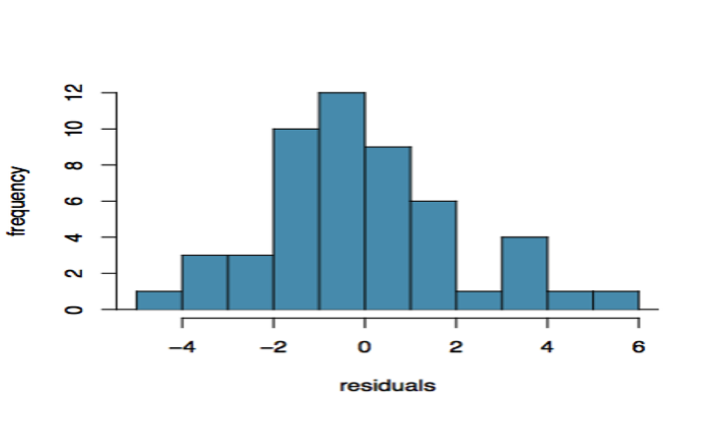
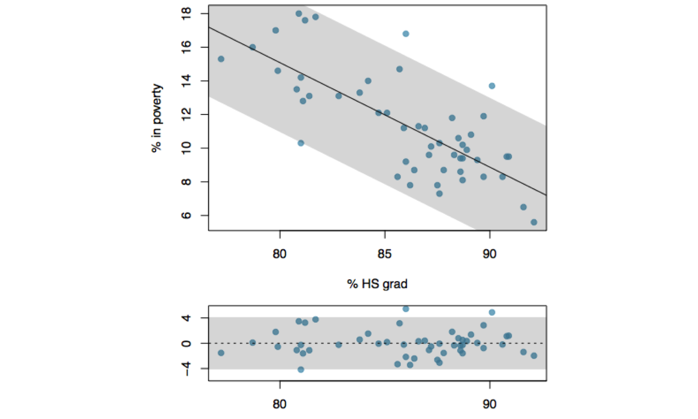
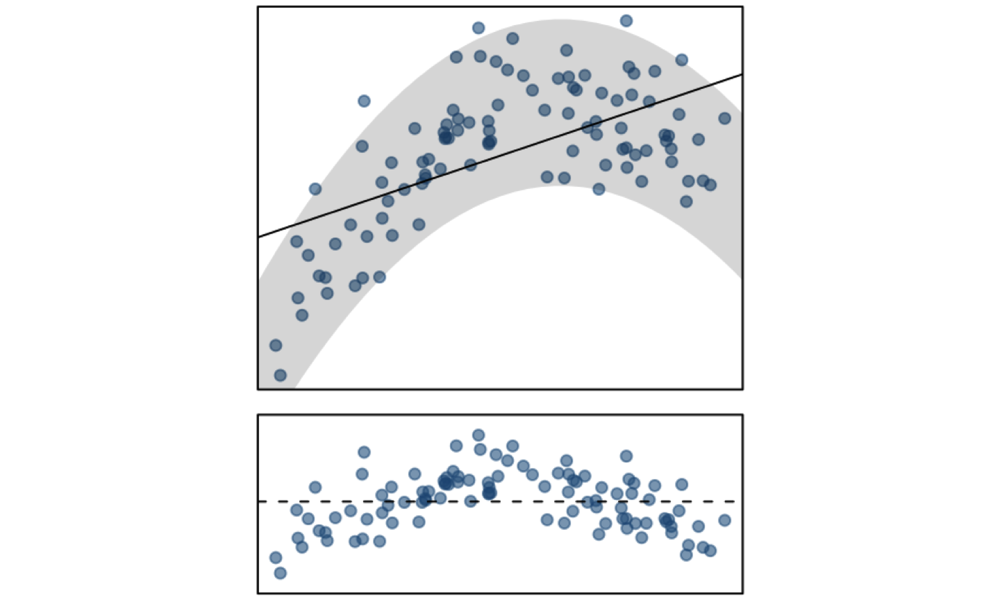
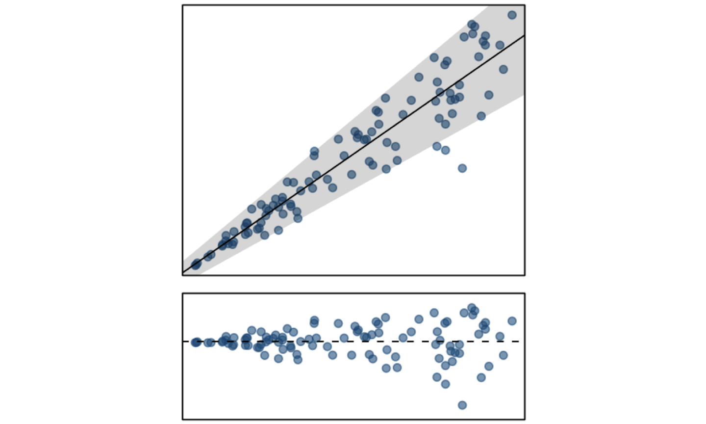
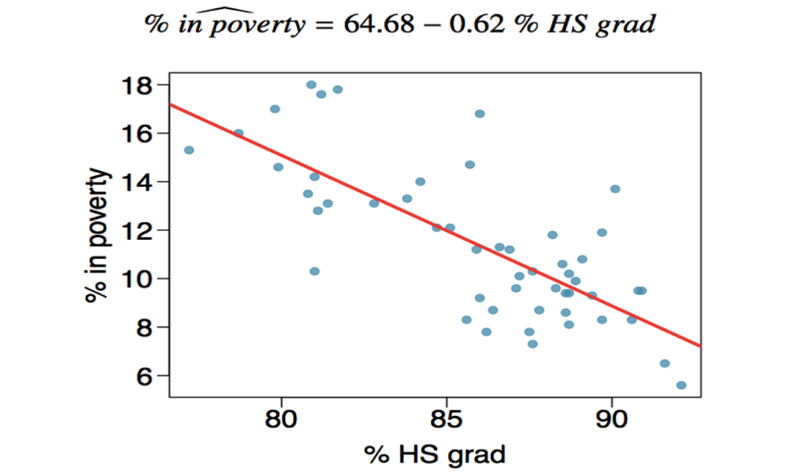
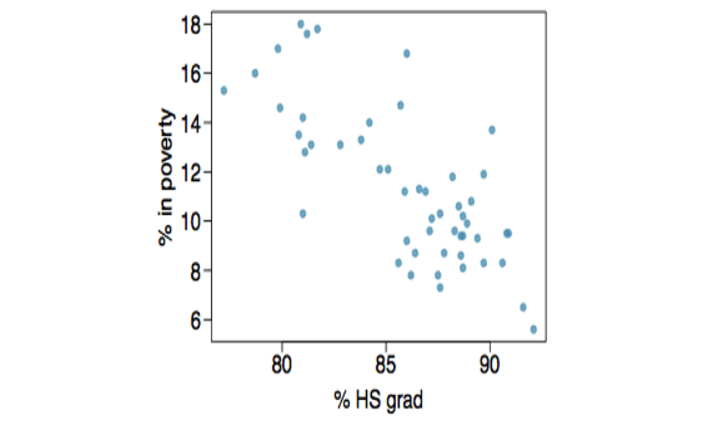
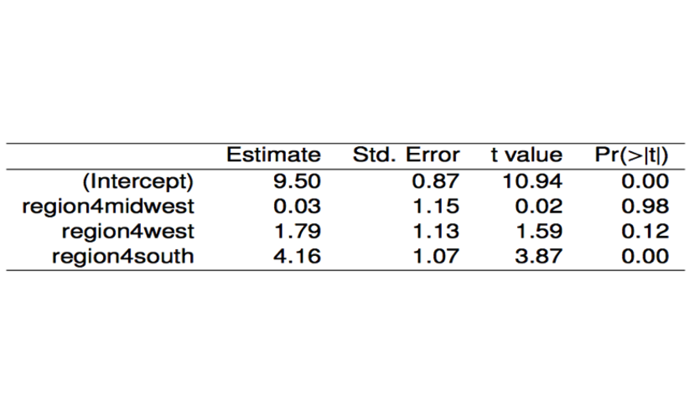

These notes use content from OpenIntro Statistics Slides by
Mine Cetinkaya-Rundel.
These notes use content from OpenIntro Statistics Slides by
Mine Cetinkaya-Rundel.
In this section, we use least squares regression as a rigorous approach for fitting data using a linear model.
Draw the scatter plot, then observe if there is a linear pattern.
The least square regression line: \(y=b_0 + b_1x\), where the coefficients \(b_0\), \(b_1\) are determined by minimizing \[D = \sum{(\text{Observed response - Predicted response})^2}\\ =\sum{(y_i - b_0 - b_1x)^2} = \sum{e_i}^2\]
There are formulas to compute \(b_0\) and \(b_0\).
We want a line that has small residuals
Why least squares?
Most commonly used.
Easier to compute by hand and using software.

Notation:
Intercept:
Slope:
Linearity
Nearly normal residuals
Constant variability
Independent observations
The relationship between the explanatory and the response variable should be linear.
Check using a scatter plot of the data, or a residuals plot.

The residuals should be nearly normal (bell shaped, symmetric).
Check using a histogram or normal probability plot of residuals


The variability of points around the least squares line should be roughly constant.
This implies that the variability of residuals around the 0 line should be roughly constant as well.
That is also called homoscedasticity.
What condition is this linear model obviously violating?
(b) Linear relationship

What condition is this linear model obviously violating?
(a) Constant variability

Estimate Slope of the regression line:
\[\color{blue}{b_1 = \frac{s_y}{s_x}R} = \frac{3.1}{3.73} \times (-0.75)= -0.62\]
Estimate Intercept of the regression line:
\[\color{blue}{b_0 = \bar{y} - b_1 \bar{x}}= 11.35 -(-0.62) \times 86.01= 64.68\] (Use the fact that regression line passes through (\(\bar{x},\bar{y})\))
The estimate linear regression model for Poverty vs. HS grad is
\[\hat{y} = 64.68 - 0.62x\]

The following code computes the summary statistics needed to manually calculate the point estimates of the intercept and slope in the regression model for the % in Poverty on the % of HS Grads using the states data.
library(dplyr)
Poverty = c(14.6, 8.3, 13.3, 18.0, 12.8, 9.4, 7.8, 8.1, 16.8, 12.1, 12.1, 10.6,
11.8, 11.2, 8.7 , 8.3, 9.4, 13.1, 17.0, 11.3, 7.3, 9.6, 10.3,6.5, 17.6,
9.6, 13.7, 9.5, 8.3, 5.6, 7.8, 17.8, 14.0, 13.1, 11.9, 10.1, 14.7,
11.2 ,9.2 ,10.3,13.5, 10.2 ,14.2, 15.3, 9.3, 9.9,8.7 ,10.8, 16.0, 8.6 , 9.5)
Graduates = c(79.9,90.6 ,83.8, 80.9, 81.1,88.7, 87.5, 88.7, 86.0, 84.7,85.1,88.5, 88.2,
85.9, 86.4, 89.7, 88.6, 82.8, 79.8,86.6, 87.6,87.1,87.6,91.6,
81.2, 88.3,90.1, 90.8, 85.6, 92.1, 86.2, 81.7, 84.2, 81.4, 89.7, 87.2, 85.7,
86.9, 86.0, 81.0, 80.8 ,88.7 ,81.0 ,77.2, 89.4, 88.9,87.8 ,89.1, 78.7,88.6, 90.9)
df = data.frame(Poverty,Graduates)
df %>% summarize(HSGrad_Mean = mean(Graduates), HSGrad_sd= sd(Graduates),
Poverty_Mean= mean(Poverty), Poverty_sd= sd(Poverty),
R = cor(Graduates, Poverty, method = "pearson")) %>% round(digits = 2)
Below, we use the lm() function to estimate the linear regression model directly. We save the estimated model in the object lreg. To extract the estimated coefficients, we apply the function coef() to the lreg object. The summary(lreg) command produces much more details of the model.
Poverty = c(14.6, 8.3, 13.3, 18.0, 12.8, 9.4, 7.8, 8.1, 16.8, 12.1, 12.1, 10.6,
11.8, 11.2, 8.7 , 8.3, 9.4, 13.1, 17.0, 11.3, 7.3, 9.6, 10.3,6.5, 17.6,
9.6, 13.7, 9.5, 8.3, 5.6, 7.8, 17.8, 14.0, 13.1, 11.9, 10.1, 14.7,
11.2 ,9.2 ,10.3,13.5, 10.2 ,14.2, 15.3, 9.3, 9.9,8.7 ,10.8, 16.0, 8.6 , 9.5)
Graduates = c(79.9,90.6 ,83.8, 80.9, 81.1,88.7, 87.5, 88.7, 86.0, 84.7,85.1,88.5, 88.2,
85.9, 86.4, 89.7, 88.6, 82.8, 79.8,86.6, 87.6,87.1,87.6,91.6,
81.2, 88.3,90.1, 90.8, 85.6, 92.1, 86.2, 81.7, 84.2, 81.4, 89.7, 87.2, 85.7,
86.9, 86.0, 81.0, 80.8 ,88.7 ,81.0 ,77.2, 89.4, 88.9,87.8 ,89.1, 78.7,88.6, 90.9)
df = data.frame(Poverty,Graduates)
lreg = lm(Poverty ~ Graduates, data=df) ## Linear Regression
coef(lreg)
#summary(lreg)
Given \(\bar{x}= 7.5\), \(\bar{y} = 14.265\), \(s_x= 0.909\), \(s_y= 1.849\), \(R= 0.8976\).
Check Answers:
A researcher measures the wrist circumference and height of a random sample of individuals. The data summary is displayed below.
Residual standard error: 4.0929 on 28 degrees of freedom. R-squared: 0.6683, Adjusted R-squared: 0.6564.
\(y= 27.1107 + 6.4843x\)
\(R^2 = 0.6683\) (variability of height that can be explained using the model)
\(R= \sqrt{0.6683} = 0.8174961774 \hspace{0.2cm} (\text{pay attention to sign of} \hspace{0.2cm}b_1)\)
\(4.0929\)
\(e= y-\hat{y} = 84- (27.1107 + 6.4843 \times 7.3)= 9.55391\)
Interpretation of \(\hat{y}= 64.68- 0.62x\)
Using the linear model to predict the value of the response variable for a given value of the explanatory variable is called prediction, simply by plugging in the value of x in the linear model equation.
There will be some uncertainty associated with the predicted value.
Applying a model estimate to values outside of the realm of the original data is called extrapolation (Extrapolation is used to estimate values that go beyond a set of given data or observations).
In our example, the intercept is an extrapolation.
The correlation
\(R = \frac{1}{n-1}\sum_{i=1}^n \frac{x_i-\bar{x}}{s_x}\frac{y_i-\bar{y}}{s_y}\hspace{0.2cm} {\text{OR}}\hspace{0.2cm} R= \frac{\sum(x_i-\bar{x})(y_i-\bar{y})}{\sqrt{\sum(x_i-\bar{x})^2(y_i-\bar{y})^2}}\)
The quantity \(R^2\) is called the coefficient of determination (see.in 8.1)
It is a statistical measure in a linear regression model that determines the proportion of variance in the response variable that can be explained by the explanatory variable(or input,or predictor variable).
The larger \(R^2\) (Close to 1), the better fit;
The smaller \(R^2\) (close to 0), the more noise; the model does not give a good fit: due to either little association or nonlinear association.
Which of the below is the correct interpretation of \(R^2\) = 0.38 (with R = -0.62):

Which of the below is the correct interpretation of \(R^2\) = 0.38 (with R = -0.62):
38% of the variability in the % of HS graduates among the 51 states is explained by the model.
38% of the time % HS graduates predict % living in poverty correctly.
62% of the variability in the % of residents living in poverty among the 51 states is explained by the model

We can allow to use categorical variable to predict outcomes.
If we divide the US into East and West, and use the model \[ \hat{poverty} = 11.17 + 0.38 \times west \]
Explanatory variable: region, reference level: east
Intercept: The estimated average poverty percentage in eastern states is 11.17%.
Slope: The estimated average poverty percentage in western states is 0.38% higher than eastern states.
If we divide the US into 4 regions: Northeast, Midwest, West, and South, and use the model

Which region (northeast, mid-west, west, or south) is the reference level?
The model is \[\hat{poverty}= 9.50 + 0.03 \times midwest+ 1.79\times west +4.16 \times south\] The variables takes value 0 or 1.